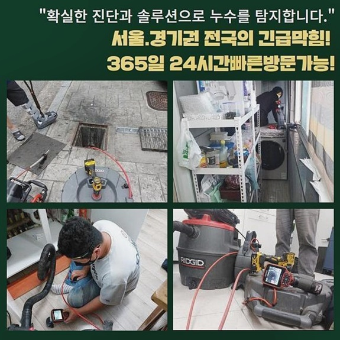
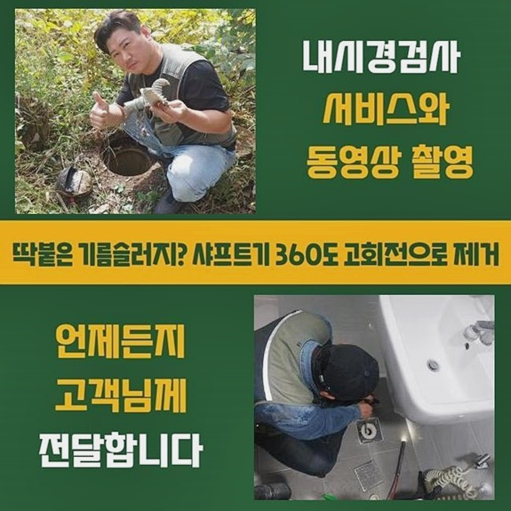
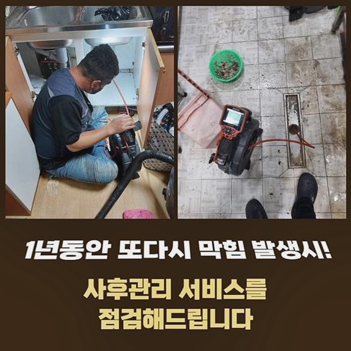
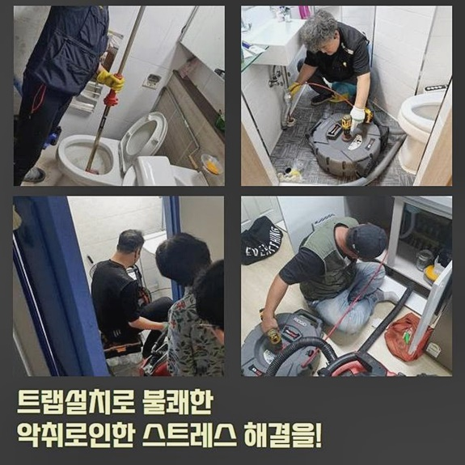
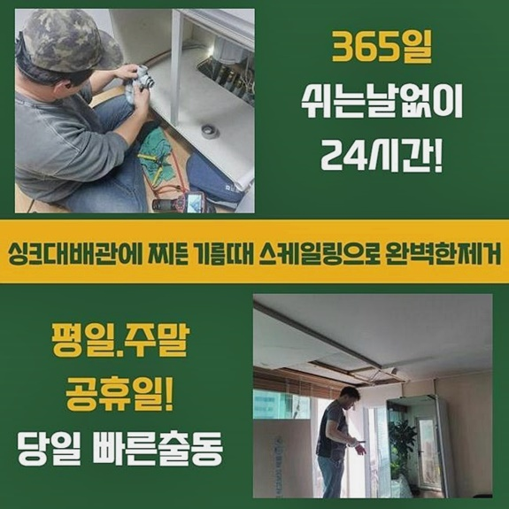
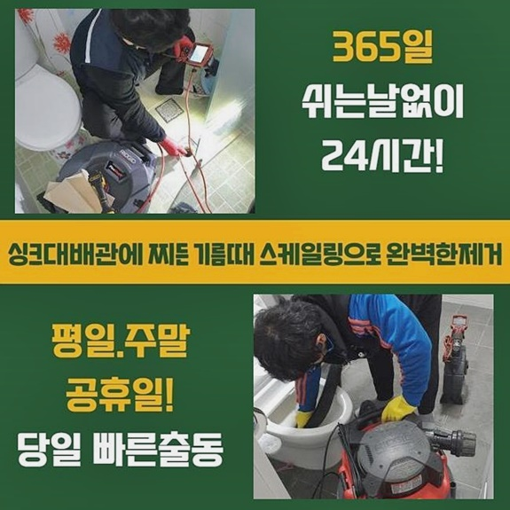

🏠 계양구 용종동대변기막힘 이화동 하수구뚫어주는곳 배관뚫는업체
용인시 처인구 배관막힘 전문 시공 후기

📋 작업 개요
- 위치: 용인시 처인구, 수원시 영통구, 화성시 동탄
- 서비스 유형: 배관막힘, 고압세척, 내시경점검
- 작업 일시:
- 업체명: 하수구수사대 (010-5615-2118)
🔍 문제 상황
계양구 용종동대변기막힘 이화동 하수구뚫어주는곳 배관뚫는업체
안락한 주거지여도 때때로 야기되는 피해들이 있답니다
아마도 까다롭게 다가오는건 배수라인에 문제가 생겨버린것인데요
물들이 안빠지면 온통 냄새로 가득해지고 평온했던 거주지가 갑작스레 비보건적인 환경들로 바뀌어요
하수관의 문제가 생겨서 배수들이 불가해지고 오염원이 역류하게되는 상태가 펼쳐진다면 위생적으로도 좋지않은 위생적으로 안좋은 국면을 맞이합니다
이럴때 오차없이 수리하는 솔루션을 지원하는게 문제들을 시정하는 전문인들의 주된 업무입니다
지금부터 고객의 거주지서 수행된 철두철미한 수순을 자세하게 일러드리고자 하는데요
고객분은 다용도공간에 자리잡은 세탁기의 배수구에서 하수들이 배출되지를 못한다고 저희전문진에게 연락하셨어요
하수관 시정을 바로잡는 저희들은 곧장 갖춰야하는 기기인 샤프트도구 석션장치 내시경카메라를 구비하여 고객님댁으로 내방했어요
도착해서 악취들과 이물들이 역류하게되는 것을 보았는데요
바로 하수들을 밀집하여 배수절차를 도전해봤죠
이 단계에서 흔하게 보이는 세제 오염원이 아닌, 각 라인에 잔존하던 오염물들이 역류되면서 악취를 생겨나게했어요

🔎 원인 분석
💡 전문가 진단: 정밀 진단 장비를 사용하여 슬러지의 고착 여부를 판명하고 타격/세척 작업을 실시했습니다.
때때로 싱크대라인과 발코니의 관로들이 이어진 경우들이 존재하기에 양쪽 관로가 연결되어있는지 체크해보는 점검과정을 이행해요
즉각적으로 이물들을 파악하도록 의뢰자께 앞서서 막힘징후가 있다거나 역류문제들이 목격된 경험이 있나 여쭈었어요
고객분은 몇일전에 하수관을 청소할 목적으로 집에 있던 세제용품과 락스를 이용해주었다 설명하셨죠
그래서 씽크대쪽과 이어져있는 라인이 주범일거란 가능성들이 높겠다는 판단을 했는데요
저희들이 방문했던 곳의 오류지점을 시정하려면 그 기조들을 명확하게 인지하는게 우선입니다
그 다음으로 내시경장치를 운용한다음 장애가 발발한 하수라인을 관찰하기위해 가용되어야하는 준비해보았어요
배수관 안이 확실히 보일 기미가 없다면 석션장치를 이용해서 쌓인 오수들을 제거시킵니다
석션기기를 가용하여 최초의 청소과정을 실시해주었어요
세척할때 잔해물들과 부유물이 배출되었으나 명확한 연유는 분명하지 못했죠
흔히 있는 석션기기 사용으로는 해결될 수 없는 사례가 있기에 즉각 내시경으로 시야확보된 내부모습을 확인할 필요가 있어요
이물을 상세히 확인하니 실로 뭉쳐진 형태의 잔해물이였는데요
구조로 미루어볼때 베란다쪽에서 배출되어진 옷에서 나오게 된 오염원일 확률이 많았습니다

🔧 작업 과정
이후에 이러한 이물을 제거시키고 앞으로는 심층부의 이물제거에 몰두했어요
주된 요인을 제거할땐 심층부의 문제들을 해결해주기 위하여 배수구 세척과정을 하기위해 가용되어야하는 기술들을 사용해요
내시경기기를 쓰는 까닭은 심부의 문제를 상세히 파악해보고 완성도 높은 청소들을 도와주기 때문이죠
석션기기로 흡입을 수행한 뒤 케이블에 장착된 내시경장치로 안까지 자세하게 보았죠
수직배관 저 너머까지 관찰하며 증세들이 일어나게된 까닭들을 체크해보았습니다
오늘의 현장처럼 막히게되는 사태는 어디서나 발생되며 작업수순도 어렵죠
그럼에도 불구하고 전문성과 경험을 함양하고 있는 전문진의 작업방향으로 고민을 안정적으로 풀어갈 수 있어요
고착되어버렸을 때 연유와 지점을 인지하고자 내시경장비를 안쪽으로 삽입했습니다
배출되는 물의 경우 여기저기 뻗어있는 하수관으로 나가는데 배관들은 짧은 경우도 있으나 장거리로 자리하고 있을 가능성도 있어요
그렇기에 눈으로는 파악자체가 되지 않는 배관 내측을 내시경기기로 이곳저곳 들여다보았는데요
내부의 모습을 체크해보니 안쪽까지 슬러지 형태와 자잘한 이물들이 안쪽에서 뒤엉켜진 형상을 하고 있었습니다
해당 이물들은 수용성이 아니라 신속히 고착화가 일어나 딱딱하게 굳어져요
상태에따라서 이용되는 장치가 차이를 보이는데 혹시라도 이물의 사이즈가 크다면 갈고리부분의 장비들로 빼내준 뒤 석션장치로 빨아당겨줍니다
심하다면 이물이 기름들과 이곳저곳에 엉켜있으면 해당 잔해를 탈락시키는 샤프트기기가 사용되는것이 옳습니다
벽면에 뒤엉키면서 굳어진 슬러지와 기름기를 샤프트장치로 분쇄시키며 뚫어주었습니다
샤프트기기는 배관쪽에서 빨리 돌아가게되면서 잔재를 잘게 분쇄시키는 필수적인 장비에요
저희들이 찾아뵈었던 곳의 모든 이물들이 제거되고 내시경 내시경기기로 반복적인 검사들을 이행해 스케일링들의 현 상황을 체크하고 배수능력을 확인하는 배수검열까지 진행시켰습니다
그리고나서 증상의 원인이 될 수 있는 잔여 이물이 없게끔 석션기기로 배출시키며 세심히 작업을 이해해 마무리지었습니다
해당 증상들을 막으려면 꾸준한 진단과 청소를 진행시켜야합니다
싱크대의 관로와 이어져있는 하수도에서 음식잔해가 중간에서 막히는바람에 역류하게되는 경우도 간혹 있답니다


✅ 작업 완료
막혀버리는 사태가 발발한 경우라면 침착함을 유지하시고 저희전문진에게 전화주세요!
저희의 세척과정은 간단한 과정뿐만 아니라 현장의 보건성까지 유지시키는 절차입니다
저희들은 막힘들을 확실하게 시정해내고 깨끗한 컨디션을 영위하도록 도울게요!
또한 유사한 증상들에 노출되었을때 조속히 저희전문진에게 도움을 청해보시기 바라요
저희로 말씀드리면 고객의 물사용을 유지시키는데에 노력합니다



⚠️ 하수구 배관 막힘 예방 및 관리 가이드
- ✅ 머리카락, 비닐, 물티슈 등 물에 분해되지 않는 이물질은 절대 흘려보내지 마세요.
- ✅ 기름기 많은 식기는 설거지 전 키친타올로 먼저 기름때를 닦아내세요.
- ✅ 주기적으로 배수구에 뜨거운 물을 가득 부어주어 유지방 고착을 방지하세요.
- ✅ 작업 후 1년 이내 재발 시 무상 A/S 보증 서비스를 제공합니다.
💡 핵심 정리
- 확실한 장비 작업(내시경 점검 및 샤프트 스케일링)으로 원인을 뿌리 뽑습니다.
- 작업 후 1년 이내에 동일한 부위 재발 시 100% 무상 A/S 서비스를 보장합니다.
- 서울 · 경기 · 인천 전 지역에 24시간 언제든 긴급 출동할 수 있도록 항시 대기 중입니다.
❓ 자주 묻는 질문 (FAQ)
🚨 용인시 처인구 배관막힘 문제로 고민이신가요?
정확한 원인 진단과 확실한 시공으로 재발 없는 해결을 약속드립니다.
24시간 긴급 출동 | 서울 · 경기 · 인천 전지역 | 1년 내 재발 시 무상 A/S